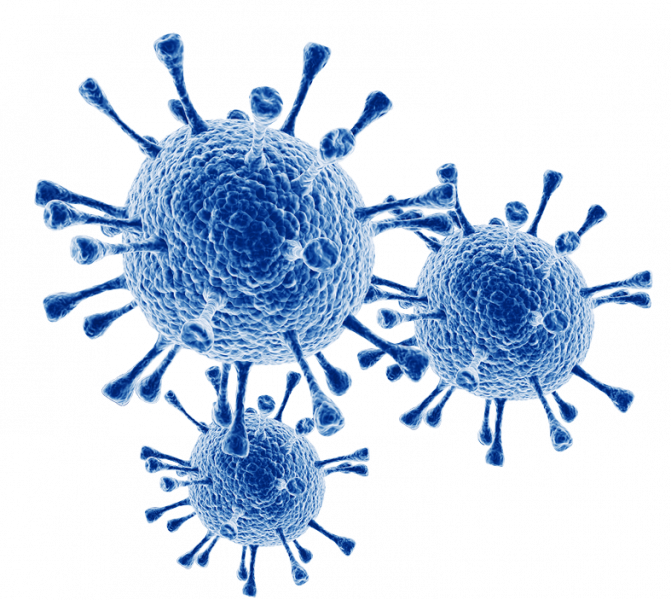

Covid News
- Clique em alguns dos temas para obter mais informações:
Fatos sobre a covid-19
O que é o coronavírus?
Os coronavírus são uma grande família de vírus que podem causar doenças em animais e humanos. Em humanos, os coronavírus provocam infecções respiratórias, que variam do resfriado comum a graves doenças, como a Síndrome Respiratória do Oriente Médio (MERS) e a Síndrome Respiratória Aguda Grave (SARS). O coronavírus descoberto, recentemente, causa a doença COVID-19.
Onde surgiu o coronavírus?
Sua origem foi extremamente expeculada durante toda pandemia, quando começou o que diziam era que surgiu em morcegos na China, porém isso jã não é mais aceitável hoje em dia depois de tanto tempo.
Variantes da covid-19:
Há várias variantes da covid-19 depois de 2 anos de pandemia. Algumas delas são:
- Alfa
- Beta
- Gama
- Delta
